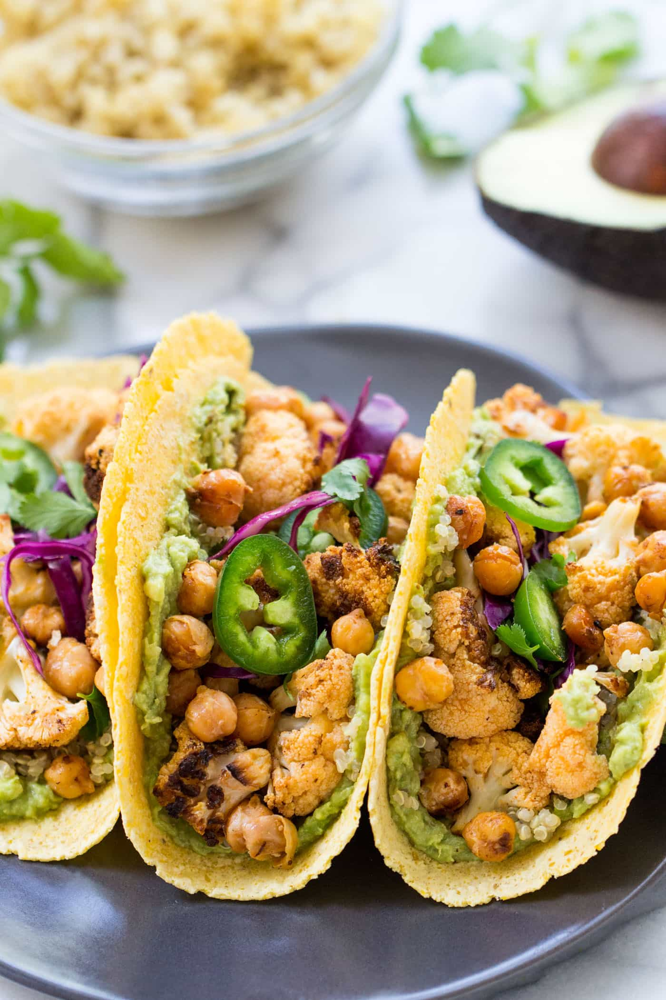

Beans and veggies tacos

Description
The perfect dish to share with your friends on Saturday night!
Ingredients
We will need:
- Some fajitas
- 250gr of red beans
- 250gr of white beans
- 100gr of cauliflower
- 2 pieces of garlic
- 2 cups of onions
- 1 avocado
- Juice of 1/2 lemon
- 1 tsp. of black pepper
- 1 tsp. of chili powder
- 2 tsps. of salt
Steps
- Cut the onions, the cauliflower and the garlic in small pieces and simmer them.
- Smash the avocado.
- When the mix is well cooked, add the beans and continue to cook until they are hot.
- Almost at the end of the preparation, season it to taste with the pepper, the lemon juice, the salt and the avocado.
- Mix well all the ingredients and enjoy your tacos!